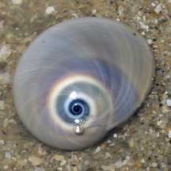
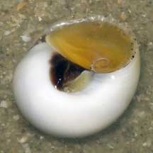

|
|
| shelled snails text index | photo index |
| Phylum Mollusca > Class Gastropoda > Family Naticidae |
| Ball
moon snail Neverita didyma Family Naticidae updated Aug 2020 Where seen? This almost spherical moon snail is commonly seen on a few of our sandy Northern shores. Especially at night or on a cool day, usually busy ploughing through the sand in search of prey, near seagrass areas. Elsewhere, it is found in sandy to muddy bottoms. It was previously known as Polinices didyma. Features: 3-5cm. Shell smooth glossy, thick heavy, spherical, the spiral tip not sticking out so that the overall shape resembles a ball (Didyma means 'testicles'). Shell pattern usually plain white sometimes with pearly pastel shades, with narrow white spiral at the spire, sometimes with irregular blotches of darker colours. On the underside, a brown blotch and a small depression. Operculum smooth, made of a thin horn-like material, yellow. Body huge, plain white. Tentacles with more opaque white bands. Sometimes mistaken for the Oval moon snail that is easily distinguished by its more tear-drop shaped shell which on the underside is completely white (no brown patch) and has a bump instead of a depression. The Ball moon snail is less shy and doesn't immediately retract completely into its shell the way the Oval moon snail does. |
|
 Tanah Merah, Feb 07 |
 Tanah Merah, Feb 07 |
 Changi, May 11 |
 Siphon (upper left) and tentcles |
|
| What does it eat? This snail is
often seen actively hunting Button
snails. Human uses: It is collected as food and for the shell trade. In Thailand it is commonly collected using fishing nets at depths of 2-10m. |
| Ball moon snails on Singapore shores |
On wildsingapore
flickr
|
| Other sightings on Singapore shores |
|
Links
References
|